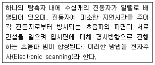
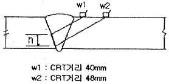
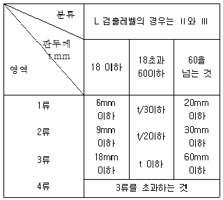

초음파비파괴검사기사 (2015-08-16 기출문제)
1과목: 비파괴검사 개론
1. 침투탐상시험에 있어서 탐상제의 점성(Viscosity)에 대한 설명으로 옳은 것은?
- 침투제의 세척성 정도의 영향
- 오염물질의 수용성 여부의 영향
- 발산되는 형광 성능 비교의 영향
- 침투제가 겨함 속으로 침투하는 속도 관계의 영향
(정답률: 79%)

2. 와전류탐상시험시 시험의 가장 큰 문제점에 해당하는 것은?
- 미소한 결함을 탐상할 수 없다.
- 정확한 전기 전도도를 측정할 수 없다.
- 미지변수에 의한 다양한 출력 지시치가 나타난다.
- 검사 누락부위를 방지하기 위하여 검사를 저속도로 해야 한다.
(정답률: 62%)
3. 강제 대형 압력용기에 부착된 노즐의 표면결함을 검출 하기 가장 적합한 비파괴검사법은?
- 누설검사
- 자분탐상검사
- 방사선투과시험
- 초음파탐상시험
(정답률: 75%)
4. 시험체의 양쪽에 접근이 가능해야 적용할 수 있는 비파괴 시험법은?
- 방사선투과시험
- 초음파탐상시험
- 자분탐상시험
- 와전류탐상시험
(정답률: 74%)
5. 다음 중 LASER(레이저)가 이용되는 검사법은?
- Holography
- Themography
- Xeroradiography
- Auto radiography
(정답률: 82%)
6. 조직검사에서 조직의 양을 측정하는 방법이 아닌 것은?
- 면적 측정법
- 직선 측정법
- 점의 측정법
- 직각의 측정법
(정답률: 67%)
7. 경도 시험의 종류 중 대면각이 136˚이고 다이아몬드 재료의 피라미드 형상 압입자를 사용하여 경도를 나타내는 시험 방법은?
- 쇼어 경도시험
- 비커스 경도시험
- 로크웰 경도시험
- 브리넬 경도시험
(정답률: 58%)
8. 0.3% 탄소강이 공석 변태 후 펄라이트(pearlite)중의 페라이트(ferrite)양은 약 몇 % 인가? (단, α의 고용량은 02025, 공석점은 0.80이다.)
- 15.5
- 25.7
- 31.3
- 45.4
(정답률: 47%)
9. 베어링용 합금이 갖추어야 할 조건이 아닌 것은?
- 소착성이 클 것
- 마찰계수가 적을 것
- 충분한 점성을 가질 것
- 하중에 견딜 수 있는 정도의 경도와 내압력을 가질 것
(정답률: 54%)
10. 특수강에서 담금질성 향상이 가장 큰 것으로 탈황에도 효과적인 첨가원소는?
- C
- Mn
- Si
- Cu
(정답률: 50%)
11. Al-Si 합금인 실루민(silumin)에 대한 설명 중 틀린 것은?
- 금속나트륨 등으로 개량처리 한다.
- Al과 Si의 합금은 공정반응을 갖는다.
- 다이캐스틸 할 때는 용탕이 서냉되어 조대화 조직이 된다.
- 유동성이 좋으므로 엷고 복잡한 사형주물에 이용된다.
(정답률: 63%)
12. 금속분말을 압축성형하고 소결하여 부품을 만드는 분말야금법의 특징으로 옳은 것은?
- 제조과정 중 절삭가공을 생략할 수 없다.
- 다공질의 금속재료를 만들기에 적합하지 않다.
- 제조과정에서 융점 이상으로 온도를 올려야 한다.
- 용해-주조공법으로 만들기 어려운 합금을 만들 수 있다.
(정답률: 60%)
13. 열간금형용 합금공구강에 대한 설명으로 틀린 것은?
- 내마모성이 크고 용착, 소착을 일으키지 않아야 한다.
- Heat checking은 C%가 높으면 잘 일어나지 않는다.
- Mo기 공구강은 담금질성 및 인성이 좋으나 탈탄을 일으키기 쉽다.
- 550℃ 부근에서 뜨임하면 프레스형강 등은 2차경화가 나타난다.
(정답률: 45%)
14. 순철의 변태점에 관한 설명으로 틀린 것은?
- A3변태는 약 910℃에서 일어난다.
- 자기변태점은 약 768℃에서 일어난다.
- 순철의 변태점은 가열 및 냉각속도와 무관하다.
- A3변태는 가열에 의해 BCC 격자가 FCC 격자로 변한다.
(정답률: 43%)
15. 가공용 Al합금은 냉간가공이나 열처리에 따라 기계적 성질이 달라지는데 질별 기호 중 ‘제조한 그대로의 것’에 표시하는 기호는?
- F
- O
- H
- W
(정답률: 67%)
16. 스터드 용접(stud welding)에서 페롤(ferrule)의 역할로 틀린 것은?
- 용접이 진행되는 공안 아크열을 집중시켜 준다.
- 용융금속의 산화를 촉진시켜 준다.
- 용융금속의 유출을 막아 준다.
- 용접사의 눈을 아크광선으로 보호해 준다.
(정답률: 66%)
17. 다음 용접 법 중 압접의 종류가 아닌 것은?
- 테르밋 용접
- 단접
- 초음파 용접
- 마찰 용접
(정답률: 68%)
18. 용접시 발생하는 잔류응력이 구조물에 미치는 영향이 아닌 것은?
- 취성파괴
- 피로강도
- 부식
- 재결정 온도
(정답률: 65%)
19. 다음 중 노치취성 시험방법이 아닌 것은?
- 슈나트(schnadt)시험
- 카안인열(kahn tear)시험
- 코머렐(kommerell)시험
- 샤르피(charpy)시험
(정답률: 53%)
20. 용접기의 아크 발생 시간이 7분, 아크 발생 정지 시간이 3분일 경우 용접기의 사용률은?
- 100%
- 70%
- 50%
- 30%
(정답률: 66%)
2과목: 초음파탐상검사 원리
21. 탐상면에 수직인 내부결함을 굴절각Θ의 탐촉자로 탐상 할 때 결함 상단부에 에코가 진행한 범 진행거리가 WU, 결함 하단부에 에코가 진행한 범 진행거리가 WL 이라 할 때 결함높이 H를 구하는 식은 무엇인가?
- H=(Wu-WL)ㆍsecΘ
- H=(Wu-WL)ㆍtanΘ
- H=(Wu-WL)ㆍcosΘ
- H=Wu-WLㆍcosΘ-WUㆍsinΘ
(정답률: 71%)
22. 다음 중 탐촉자와 탐촉자 케이블을 연결하는 컨넥터로 쓰이지 않는 것은?
- Lemo Type Connector
- VHF Type Connector
- UHF Type Connector
- Microdt Type Connector
(정답률: 47%)
23. 초음파 탐상기에서 탐촉자의 분해능을 어느것과 가장 직접적인 관계가 있는가?
- 탐촉자의 직경
- 대역 폭
- 펄스 반복율
- 불감대
(정답률: 59%)
24. 다음 재료 중에서 초음파의 감쇠현상이 가장 심하게 일어나는 것은?
- 알루미늄 주조물
- 마그네슘 주조물
- 탄소강 주조물
- 구리 주조물
(정답률: 63%)
25. 결정입이 조대한 재료의 초음파탐상시럼에 대해 기술한 것으로 옳은 것은?
- 결정입이 조대한 시험체를 초음파가 전파하는 경우에는 결정입계에서 반사화 굴절이 일어나 산란이 되기 어렵다.
- 결정입의 크기가 초음파 파장보다 작으면 초음파의 감쇠는 적다.
- 경정입계에서의 산란 때문에 초음파는 그 에너지가 증대되어 가면서 전파한다.
- 도중에 산란되어 되돌아 온 초음파를 수신하면 노이즈형의 결함에코가 나타난다.
(정답률: 25%)
26. 수침법으로 구리를 초음파탐상할 때 종파를 경사지게 입사시켜 시험하고자 한다. 이 때 구리의 제 2임계각은 몇 도인가? (단, 물의 종파 속도 VL=1500m/sec, 구리의 종파속도 VL=4700m/sec, 구리의 횡파 속도 VS=2300m/sec 이다.)
- 40.7˚
- 18.6˚
- 20.3˚
- 9.3˚
(정답률: 59%)
27. 다음 주파수 중 가장 감쇠가 심하게 일어나는 것은? (단, 다른 조건은 모두 동일 하다.)
- 1.0MHz
- 10MHz
- 2.5MHz
- 25MHz
(정답률: 70%)
28. 초음파탐상 시 펄스(pulse) 길이가 길어지면 일어나는 현상은?
- 분해능 감소
- 침투능 감소
- 감도 감소
- band 폭 증가
(정답률: 71%)
29. 다음 설명이 나타내는 비파괴검사법은?

- Computed Radiography
- Phased Array Technology
- Scanning Acoustic Microscpe
- Electro-Magnetic Acoustic Transducer
(정답률: 68%)
30. 탐촉자의 압전소자의 두께가 얇아지면 다음 중 어떤 현상이 나타나겠는가?
- 주파수가 높아진다.
- 주파수가 낮아진다.
- 빔의 폭이 커진다.
- 빔의 폭이 작아진다.
(정답률: 53%)
31. 다음 중에서 두께측정에 가장 큰 영향을 미치는 것은?
- 증폭직선성
- 시간축직선성
- 분해능
- 게이트 정밀성
(정답률: 59%)
32. 초음파 탐촉자 제작시 최대 댐핑이 일어날 수 있는 경우는?
- 댐핑재의 임피던스가 압전재의 임피던스보다 클 때
- 댐핑재의 임피던스가 압전재의 임피던스보다 같을 때
- 댐핑재의 임피던스가 압전재의 임피던스보다 작을 때
- 댐핑재의 임피던스가 압전재의 임피던스의 5배 일 때
(정답률: 65%)
33. 두 개의 서로 다른 물질의 경계면에서 음파의 반사량을 결정하는데 사용되는 요소는?
- 열율(Young's modulus
- 제 1매질의 두께
- 음향 임피던스
- 주파수
(정답률: 72%)
34. 전자 음향 탐촉자(EMAT : Electomagnetic Acoustic Transducer)와 관련된 설명으로 옳은 것은?
- 전자 음향 탐촉자는 전자적으로 금속표면에 발생된 와전류와 자계와의 사이에서 일어나는 상호작용으로 초음파를 송수신한다.
- 전자음향 탐촉자는 접촉매질이 필요 없으며 상온 또는 극저온의 시험체는 탐상이 가능하나 고온시험체는 탐상할 수 없다.
- 전자 음향 탐촉자는 RF(Radio Frequency)전류가 흐르는 코일 위에 압전재료를 놓아 초음파를 발생시키며 시험체와 탐촉자 간의 접촉이 필요없다.
- 전자 음향 탐촉자는 탐촉자와 시험체 사이의 간격을 적절히 조정함으로써 횡파, 종파 및 표면파를 발생시킬 수 있다.
(정답률: 47%)
35. 검사체내에서 음파의 전파 특성에 영향을 주는 것이 아닌 것은?
- 검사체 재질의 밀도
- 검사체 재질의 탄성계수
- 검사체 재질내에서의 초음파 속도
- 검사체의 무게
(정답률: 74%)
36. 초음파탐상시험에서 시험주파수를 선정할 때 고려해야 할 사항 중 잘못된 것은?
- 감쇠가 큰 재료는 낮은 주파수가 좋다.
- 작은 결함까지 검출하려면 높은 주파수가 좋다.
- 시험체의 두께가 두꺼울수록 높은 주파수가 좋다.
- 빔의 분산각을 적게 하기 위해 높은 주파수가 좋다.
(정답률: 52%)
37. 수정진동자의 기본주파수는 일차적으로 무엇의 함수인가?
- 장치내 펄스증폭기 증폭 특성
- 접촉매질과 재료에 따른 특성
- 사용전압의 펄스 길이
- 수정 진동자의 두께
(정답률: 53%)
38. 초음파탐상시험에서 주파수를 증가시킬 경우 일정 직경의 진동자에 있어서 빔 분산각의 변화로 옳은 것은?
- 빔 분산각은 증가한다.
- 빔 분산각은 진동자의 직경에만 의존하므로 변화하지 않는다.
- 빔 분산각은 상대적으로 감소한다.
- 빔 분산각은 파장에만 관계되므로 일정하다.
(정답률: 65%)
39. 다음 중 초음파탐상시험의 스크린상 에코의 파형을 가장 바르게 읽는 방법은?
- 높이는 최고치, 위치는 에코가 일어서기 시작한 점을 시간축 눈금에서 읽는다.
- 높이는 최고치, 위치는 에코높이가 최고치인점의 시간축 눈금에서 읽는다.
- 높이는 최고치, 위치는 에코 높이의 10% 되는 곳을 시간축 눈금에서 읽는다.
- 높이는 최고치, 위치는 에코 높이의 50% 되는 곳을 시간축 눈금에서 읽는다.
(정답률: 52%)
40. 다음 시험체 중 판파를 적용하여 검사 가능한 대상물은?
- 강괴
- 단조품
- 박판재
- 원형제품
(정답률: 78%)
3과목: 초음파탐상검사 시험
41. 초음파탐상시 게인을 높여도 저면에코가 나타나지 않는 경우 취할 수 있는 조치는?
- 2탐촉자법을 사용한다.
- 처음보다 낮은 주파수를 사용한다.
- 지름이 작은 탐촉자를 사용한다.
- 점성이 작은 기름을 쓴다.
(정답률: 54%)
42. 초음파탐상검사의 수침법에 대한 설명으로 틀린 것은?
- 직접 접촉법보다 에코변화나 표면상태에 덜 영향을 받는다.
- 접촉매질이 연속적으로 공급된다.
- 정밀시험이므로 시험속도가 상대적으로 느려진다.
- 시험물 형상에 따른 탐촉자 전면에 특수한 슈(shoe)를 부착할 필요가 없다.
(정답률: 52%)
43. 압연제품이나 단강제품에 비래 주조제품에 많이 발생하는 에코는?
- 임상 에코
- 저면 에코
- 표면 에코
- 고스트 에코
(정답률: 59%)
44. 수직탐상에서 저면 및 여러 치수의 원형평면 결함의 에코높이와 탐상거리와의 관계를 그림으로 표시한 것을 무엇이라 하는가?
- DAC 선도
- AVG 선도
- 면적진폭 특성곡선
- 거리진폭 특성곡선
(정답률: 37%)
45. 초음파 탐상시험시 용접한 철판 내부의 용입영역에 평행하게 있는 결함의 탐상에 가장 좋은 방법은?
- 표면파를 사용한 접촉 경사각 탐상
- 종파를 사용한 수직 접촉법
- 표면파를 사용한 수침법
- 횡파를 사용한 경사각 탐상
(정답률: 66%)
46. 탐촉자의 댐핑(damping)에 관한 설명으로 틀린 것은?
- 댐핑상수가 크면 펄스폭이 작아진다.
- 댐핑상수가 크면 펄스강도가 작아진다.
- 댐핑재는 진동자의 음파 진행방향의 반대쪽에 부착한다.
- 댐핑재와 진동자의 임피던스가 같을 때 최소 댐핑이 일어난다.
(정답률: 44%)
47. 판재를 경사각 탐상할 때 불연속의 위치를 알아내기 위하여 알아야 되는 요소는?
- 판재의 두께와 탐촉자의 굴절각을 알아야 한다.
- 판재의 두께와 탐촉자의 웨지(Wedge)내 음향 속도를 알아야 한다.
- 탐촉자의 웨지(Wedge)와 판재의 음향속도를 알아야 한다.
- 탐촉자의 입사각 판재의 음향속도를 알아야 한다.
(정답률: 58%)
48. 단조품에 대한 수직탐상시 저면에코 방법으로 탐상감도를 설정할 경우의 장점이 아닌 것은?
- 표면거칠기를 보정하지 않아도 된다.
- 시험체 곡률을 보정하지 않아도 된다.
- 시험체 형상에 구애받지 않는다.
- 시험편 방식에 비하여 감도설정이 쉽다.
(정답률: 50%)
49. 2~5MHz의 수직탐촉자로 STB-G 표준시험편 V15-5.6과 V15-1.4 의 인공결함의 에코높이를 측정하였을 때 몇 dB의 차가 생기는가?
- 6
- 12
- 18
- 24
(정답률: 30%)
50. 경사각 탐촉자의 주사법 중 2탐촉자법에 해당 되는 것은?
- 지그재그주사
- 좌우주사
- 탠덤주사
- 진자주사
(정답률: 79%)
51. STB-G 표준시험편의 주된 용도가 아닌 것은?
- 수직 탐상의 감도조정
- 수직 탐상 결과의 판정
- 탐상기의 증폭직진성의 체크
- 수직 탐촉자의 거리 진폭 특성 체크
(정답률: 63%)
52. 같은 크기의 경함 중 초음파탐상검사로 가장 발견하기 쉬운 결함은?
- 구형의 공동
- 이물질의 개재
- 초음파 진행방향과 나란한 균열
- 초음파 진행방향과 수직인 균열
(정답률: 77%)
53. 경사각탐촉자를 이용한 용접부의 초음파 탐상시 기공(porosity)에 의한 에코신호의 설명으로 적절하지 못한 것은?
- 반사파의 에코높이는 상대적으로 낮으며 폭도 좁다.
- 기공은 임의의 위치에서 발생하므로 결함발생 위치에 따른 결함종류의 추정은 어렵다.
- 진자주사를 하는 경우 반사파의 에코높이는 크게 변화하지 않는다.
- 좌우주사를 하면 에코높이가 급격하게 변화하나 목돌림주사에 의한 경우는 에코높이는 그다지 변하지 않는다.
(정답률: 49%)
54. 후판의 라미네이션 결함 검출에 가장 효과적인 검사법은?
- 수직탐상법
- 탠덤탐상법
- 표면파탐상법
- 경사각탐상법
(정답률: 62%)
55. 다음 중초음파탐상시험시 두꺼운 주물내의 기공검사에 가장 적합한 검사법은?
- 표면 SH파 탐상법
- 표면파 탐상법
- 수직 탐상법
- 판파 탐상법
(정답률: 70%)
56. 초음파탐상기에 사용하는 1진동자 및 2진동자 탐촉자에 대한 설명으로 틀린 것은?
- 보통 1진동자 수직탐촉자에는 송신펄스폭이 넓기 때문에 근거리의 탐상에 유리하다.
- 2진동자 탐촉자는 근거리결함의 탐상에 유리하다.
- 2진동자를 음향격리면에 의해 분리하고 있기 때문에 수침법에서와 같이 표면에코를 수신하는 것이 없다.
- 1진동자 수직탐촉자에 의한 직접 접촉법의 탐상도형에도 표면에코를 관측할 수 있다.
(정답률: 24%)
57. 어떤 시험체를 탐상해 보니 CRT 스크린의 100% FSH를 초과하는 아주 큰 에코를 가진 결함을 발견하였다. 이 에코높이가 몇 % FSH인지 알아보기 위하여 게인을 조절 하니 7sB를 내려야 100% FSH 에 만남을 알수 있었다. 이 에코 높이는 약 몇 % FSH인가? (단, FSH은 full screen height 의 약어이다.)
- 125% FSH
- 150% FSH
- 185% FSH
- 225% FSH
(정답률: 46%)
58. 45도 경사각 탐촉자를 사용할 때 6dB-drop법으로 최대지시치로부터 낮아진 전, 후의 위치에서의 CRT거리(W)가 그림과 같을 때에 결함의 높이는?

- 4.5mm
- 5.6mm
- 6.5mm
- 7.6mm
(정답률: 45%)
59. 다음의 초음파탐상검사 방법 중 비접촉식이 아닌 것은?
- 전자초음파법(electro-magnetic acoustic transducer)
- Dry couplant 탐촉자에 의한 방법
- 레이저를 이용하는 방법
- 크리핑파(creeping wave) 법
(정답률: 65%)
60. 초음파 탐상검사에 사용되는 분할형 탐촉자에 지연재를 사용하는 이유는?
- 초음파 초점을 만들기 위해서
- 진동자를 분할시키기 위해서
- 불감대를 짧게하기 위해서
- 초음파의 파장을 길게 지연시키기 위해서
(정답률: 50%)
4과목: 초음파탐상검사 규격
61. 초음파의 펄스 반사법에 의한 두께 측정 방법(KS B ⑤36)에 따라 1진동자 수직 탐촉자를 사용하여 부식부의 두께를 측정시 이면이 부식되어 있다고 추정될 때 선정해야 할 측정방법은?
- 1회 측정법
- 2회 측정법
- 지름 30mm 원내 다점 측정법
- 정밀측정법
(정답률: 47%)
62. 금속재료의 펄스반사법에 따른 초음파탐상 시험방법(KS B 0817)에서 탐상도형의 기본기호로 틀린 것은?
- T : 송신펄스
- S : 표면에코
- B : 흠집에코
- W : 측면에코
(정답률: 69%)
63. 강 용접부의 초음파탐상 시험방법(KS B 0896)에 따른 다음 표를 이용하여 제시된 결함지시 등급은?

- 1류
- 2류
- 3류
- 4류
(정답률: 59%)
64. 보일러 및 압력용기의 재료에 대한 초음파비파괴검사(ASME Sec.V, Art.5)에 따라 주조품을 탐상검사할 때 수직탐촉자를 사용하고, 특수한 경우에는 경사각탐촉자를 추가로 사용하는데 이 특수한 경우에 대한 설명으로 옳은 것은?
- 자동 DAC 장치를 사용할 때
- 사용주파수가 0.5MHz 일 때
- 주조품의 재질이 알루미늄일 때
- 주조품의 전면과 후면과의 각도가 15˚를 넘을 때
(정답률: 62%)
65. 금속재료의 펄스반사법에 따른 초음파탐상 시험방법 통칙(KS B 0817)에서 음량 결합의 방법이 아닌 것은?
- 투과법
- 국부 수침법
- 직접 접촉법
- 수침법
(정답률: 42%)
66. 보일러 및 압력용기의 재료에 대한 초음파비파괴검사(ASME Sec.V, Art.4)에 따라 곡률이 508mm(20인치) 이하인 시험대상물을 검사하기 위해 곡률이 254mm(10인치)인 기본교정시험편을 제작하였다. 이 시험편을 사용하여 검사할 수 있는 시험 대상물의 곡률 반경 범위로 적합한 것은?
- 229mm(9인치) 이상 381mm(15인치) 이하의 곡률을 가진 것은 검사 가능하다.
- 229mm(9인치) 이상 미만의 곡률을 가진 것은 검사 가능하다.
- 381mm(15인치) 초과하는 곡률을 가진 것은 검사 가능하다.
- 381mm(15인치) 초과하고 508mm(20인치) 미만인 것은 검사 가능하다.
(정답률: 63%)
67. 아크용접 강관의 초음파탐상검사 방법(KS D 0252)에서 규정하는 탐상감도는 다음 중 어떤 인공흠으로부터 결정되는가?
- N-30
- N-16
- D-30
- D-16
(정답률: 57%)
68. 보일러 및 압력용기의 재료에 대한 초음파비파괴검사(ASME Sec.V, Art.4)의 일반적인 시험요건 중 진동자 치수의 최소 중첩면적은?
- 5%
- 10%
- 15%
- 20%
(정답률: 62%)
69. 보일러 및 압력용기의 재료에 대한 초음파비파괴검사(ASME Sec.V, Art.4)에 따른 접촉매질에 관한 설명으로 옳은 것은?
- 티타늄에 사용되는 접촉매질은 황(S)의 함량이 250 ppm을 초과해서는 안된다.
- 니켈합금에 사용되는 접촙매질은 인(P)의 함량이 250 ppm을 초과해서는 안된다.
- 탄소강에 사용되는 접촙매질은 할로겐 화합물의 함량이 250 ppm을 초과해서는 안된다.
- 오스테아니트계 스테인리스강에 사용되는 접촉매질은 할로겐 화합물의 함량이 250 ppm을 초과해서는 안된다.
(정답률: 57%)
70. 보일러 및 압력용기의 재료에 대한 초음파비파괴검사(ASME Sec.V, Art.4)에서 검교정으로 확인한 경우를 제외했을 때 다음 중 탐촉자 이동속도로 옳은 것은?
- 76mm/s를 초과할 수 없다.
- 152mm/s를 초과할 수 없다.
- 254mm/s를 초과할 수 없다.
- 3048mm/s를 초과할 수 없다.
(정답률: 56%)
71. 초음파 탐상시험용 표준시험편(KS B 0831)에 의해 A3형계 STB 표준시험편으로 점검할 때 합격여부 판정 기준에 포함되지 않는 것은?
- 굴절각 눈금
- 입사점 측정위치
- R 100면의 에코 높이
- Φ4×4mm 구멍의 에코 높이
(정답률: 75%)
72. 보일러 및 압력용기의 재료에 대한 초음파비파괴검사(ASME Sec.V, Art.5)에서 시험 결과 기록 요건이 아닌 것은?
- 표면조건
- 접촉매질
- 교정자료
- 판정기준
(정답률: 49%)
73. 강 용접부의 초음파 탐상시험방법(KSㅠ 0896)에 의한 원둘레 이음 용접부의 초음파 탐상에 사용하는 대비 시험편의 곡률 반지름은 시험체의 곡률 반지름의 몇 배로 하여야 하는가?
- 1배 이상 1.5배 이하
- 0.9배 이상 1.5배 이하
- 1배 이상 1.5배 미만
- 0.9배 초과 1.4배 미만
(정답률: 60%)
74. 초음파 탐상시험장치의 성능측정 방법(KS B ⑤34)에서 초음파 탐상기의 성능측정 항목애 해당하지 않은 것은?
- 증폭 진선성
- 시간축 직선성
- 근거리 분해능
- 근거리 음장
(정답률: 52%)
75. 초음파 탐상시험장치의 성능측정 방법(KS B ⑤34)에서 신호원으로 쵸준 시험편을 사용하지 않아도 되는 것은?
- 증폭 직선성
- 시간축 직선성
- 수직 탐상의 감도 여유값
- 경사각 탐상의 감도
(정답률: 45%)
76. 압력 용기용 강판의 초음파탐상시험(KS D 0233)에서 두께가 63.5mm인 강판 용접부에 사용하여야 할 탐촉자는?
- 2진동자 수직 탐촉자
- 경사각 탐촉자
- 수직 탐촉자
- 수직 탐촉자 또는 2진동자 수직 탐촉자
(정답률: 21%)
77. 탄소강 및 저합금강 단강품의 초음파탐상 시험방법(KS D 0248)에 의한 탐상기에 대한 설명으로 옳은 것은?
- 공칭주파수는 일반적으로 1MHz에서 2.25MHz 범위의 것을 사용한다.
- 증폭 직선설은 ±5%로 한다.
- 시간축 직선성은 ±5%로 한다.
- 게인 조정기는 1스텝이 5dB 이하로 한다.
(정답률: 52%)
78. 압력용기용 강판의 초음파탐상 검사방법(KS D 0233)에서 자동경보장치가 없는 탐상장치로 수직법에 의한 펄스 반사법으로 강판을 탐상할 때 주사속도는 얼마 이내로 하면 좋은가?
- 20mm/sec
- 200mm/sec
- 2mm/sec
- 2000mm/sec
(정답률: 62%)
79. 보일러 및 압력용기의 재료에 대한 초음파비파괴검사(ASME Sec.V, Art.4)에 따라 증폭직선성을 측정할 때 스크린 80% 높이의 에코를 6dB 내렸을 때 지시 한계의 허용 범위는?
- 16~24%
- 32~48%
- 40~60%
- 68~88%
(정답률: 60%)
80. 초음파 탐촉자의 성능 측정 방법(KS D ⑤35)에 따라 개별특정항목에 해당하지 않는 것은?
- 입사점
- 불감대
- 시간응답특성
- 굴절각
(정답률: 63%)